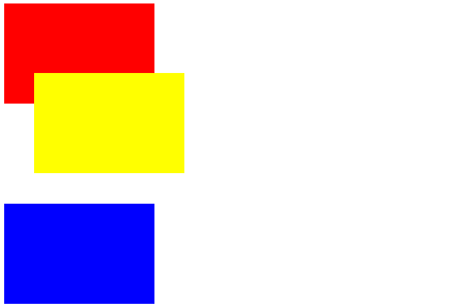
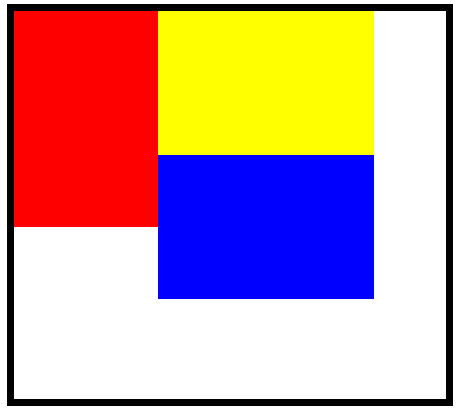
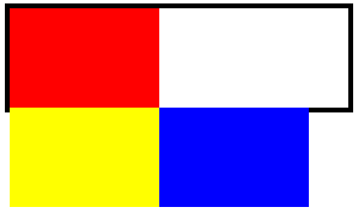

上一节讲了普通流定位，浮动定位和绝对定位。并且举了最基本的例子。
这一节将作为上一节补充，把我觉得使用中需要注意的点用例子的形式表达给大家。
例4：用div标签生成3个元素块，让黄色块在普通流定位的地方往右上角偏移30个像素（如图）。

解释：我们设置position属性为relative，来进行在普通流定位基础上的相对定位。
步骤：
CSSExample4.html
当position的值为absolute的时候，top和left用来指示距离元素左上角距离整个页面左上角的偏移量。
当position的值为relative的时候，top和left则用来指示相对偏移量。
黄色div偏移后，蓝色div并没有抢占它的位置，这是和绝对定位的根本性的不同，相对定位的元素仍然在文档流中。
事实上，只是我们看起来它偏移了，在浏览器的心目中，它的位置仍然在原来的地方。
例5：用div标签生成一个大元素块，然后在其内部用div标签生成3个小元素块，让3个小元素块按浮动定位排列（如图）。

解释：我们在外面套了一层大的div，是为了迫使小div换行，从而观察换行时的效果。
步骤：
CSSExample4.html
由于大div的宽度是定死的，提供的横向空间不足，所以蓝色的div被迫换行了。
尽管大div提供了足够的高度，来让蓝色div排到红色div的正下方，但是蓝色div选择排到黄色div的下方，虽然这样的话就无法向左边float到底了。
这说明，所有的元素块都愿意呆在更高的地方，他们会优先选择高的地方，然后再朝着一个方向float。
如果大div既没有提供足够的宽度，又没有提供足够的高度，就会造成溢出，关于溢出时对页面的控制，可以狠狠的点击这里。
如果我们没有显式的给大div指定尺寸，它就会很“聪明”的根据自己子元素的情况来调整自己的大小。我是指，某些情况下很聪明，我们来看下面这个例子。
例6：用div标签生成一个不指定大小的大元素块，然后在其内部用div标签生成3个小元素块，其中红色的用普通定位，其他用浮动定位（如图）。

解释：我们重点观察大div是怎样聪明的决定自己的尺寸的。
步骤：
CSSExample6.html
我们可以看到，大div是根据红色div的高度来决定自己的高度的。
大div之所以向右延伸占满了一行，是因为div的display属性默认是block，就是块元素。
事实上，父元素在没有显式指定尺寸的情况下，都会为了使自己能够包含所有的子元素，来动态的调整自己的尺寸。
但是，浮动定位的元素将不被考虑在内。浮动定位的元素就像坏孩子一样，虽然仍然是子元素集合中不可分割的一部分，但是父元素将不会为了他们而调整自己的尺寸。
除非，父元素自己就是float的，这样的话它就会好好考虑到坏孩子们的立场，从而愿意为了他们调节自己的尺寸了。
好啦，这一节就到这里，我们来总结一下：
练习1：在例6的页面中，试着把大div的float属性也设置成left，观察排版效果。